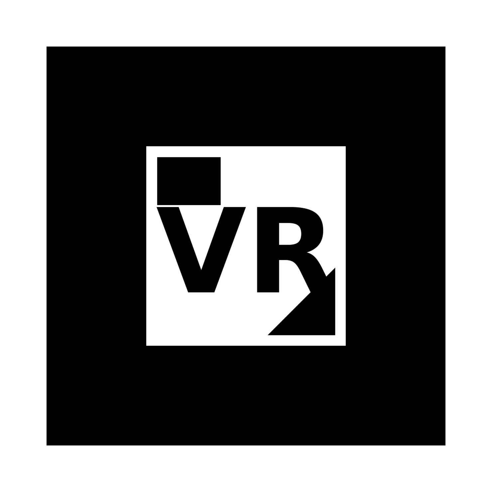

OPEN CAMPUS ｜ AR DEMO
VR酔いを軽減する
移動法を体験しよう
産業能率大学 情報マネジメント学部 川野邊研究室 西野 颯人
研究テーマ：VR環境におけるUI/UXによるVR酔いの軽減
▶ さっそく体験する
スマホ対応アプリ不要
iPhone / Android
1 スマホでQRを読み取る
スマホのカメラでこのQRを読み取り、
ARページを開きます。
表示されたら「カメラを許可」を選んでください。
（URL）
2 マーカーにかざす

この「VR」マーカー（ポスターに掲示）に、枠全体が映るようにカメラを向けると、
VR環境がポスターの上に立体的に浮かび上がります。
? 見どころ
- テレポート移動法：放物線で着地点を指定し瞬間移動。視界が流れず酔いにくい。
- スムーズ移動：連続的に前進。視界が流れ続け酔いやすい（右下の視界に注目）。
- 視覚情報の最適化：トンネル効果＋暗闇シーンで視界の流れを抑え、酔いを軽減。
💡 うまく映らないときは、マーカー全体を明るい場所で・画面いっぱいに映すと安定します。
カメラが起動しない場合は「3Dで見る」でも中身を確認できます。